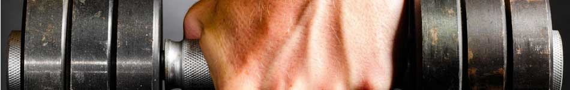

| Home | Workouts | Good Food Diets | |
|  | |||
|
|
LegsQuadriceps (front of thigh)SquatThe squat is performed by squatting down with a weight held across the upper back under neck and standing up straight again. This is a compound exercise that also involves the glutes (buttocks) and, to a lesser extent, the hamstrings, calves, and the lower back. Lifting belts are sometimes used to help support the lower back, as are tight-fitting "squat suits" which compress the lower torso. The freeweight squat is one of 'The Big Three' powerlifting exercises, along with the deadlift and the bench press.[2] Equipment Squats can be performed using only the practitioner's body weight. For weighted squats, a barbell is typically used, although the practitioner may instead hold dumbbells, kettlebells, or other weighted objects. Individuals uncomfortable performing freeweight squats may use a Smith machine or hack squat machine. Major variants See also: Squat (exercise) § Variants Common variations include front squats, in which the weight is held across the upper chest, and box squats, in which the practitioner rests briefly on a box or bench at the bottom of the movement. Leg pressThe leg press is performed while seated by pushing a weight away from the body with the feet. It is a compound exercise that also involves the glutes and, to a lesser extent, the hamstrings and the calves. Overloading the machine can result in serious injury if the sled moves uncontrollably towards the trainer.[3] Equipment Leg press machine. DeadliftThe deadlift is performed by squatting down and lifting a weight off the floor with the hand until standing up straight again. Grips can be face down or opposing with one hand down and one hand up, to prevent dropping. Face up should not be used because this puts excess stress on the inner arms. This is a compound exercise that also involves the glutes, lower back, lats, trapezius (neck) and, to a lesser extent, the hamstrings and the calves. Lifting belts are often used to help support the lower back. The deadlift has two common variants, the Romanian deadlift and the straight-leg-deadlift. Each target the lower back, glutes and the hamstrings differently. Equipment Dumbbells, barbell, trapbar or Smith machine. Major variants Sumo (wider stance to emphasise the inner thighs); stiff legged (emphasizes hamstrings); straight-legged deadlift (emphasizes lower back). Leg extensionThe leg extension is performed while seated by raising a weight out in front of the body with the feet. It is an isolation exercise for the quadriceps. Overtraining can cause patellar tendinitis.[4] The legs extension serves to also strengthen the muscles around the knees and is an exercise that is preferred by physical therapists. Equipment Dumbbell, cable machine or leg extension machine. Wall SitThe wall sit, also known as a static squat, is performed by placing one's back against a wall with feet shoulder width apart, and lowering the hips until the knees and hips are both at right angles. The position is held as long as possible. The exercise is used to strengthen the quadriceps. Contrary to previous advice in this section, this exercise is NOT good for people with knee problems because the knees bear most of the load, especially when they are held at right angles (90 degrees).[citation needed] Equipment Body weight, wall or other flat vertical surface, exercise ball placed behind the back is optional as well. Hamstrings (back of legs)Leg curlThe leg curl is performed while lying face down on a bench, by raising a weight with the feet towards the buttocks. This is an isolation exercise for the hamstrings.[5] Equipment Dumbbell, cable machine or leg curl machine. Major variants Seated (using a leg curl machine variant); standing (one leg at a time). SnatchThe snatch is one of the two current olympic weightlifting events (the other being the clean and jerk). The essence of the event is to lift a barbell from the platform to locked arms overhead in a smooth continuous movement. The barbell is pulled as high as the lifter can manage (typically to mid [ chest] height) (the pull) at which point the barbell is flipped overhead. With relatively light weights (as in the "power snatch") locking of the arms may not require rebending the knees. However, as performed in contests, the weight is always heavy enough to demand that the lifter receive the bar in a squatting position, while at the same time flipping the weight so it moves in an arc directly overhead to locked arms. When the lifter is secure in this position, he rises (overhead squat), completing the lift. CalvesStanding calf raiseThe standing calf raise is performed by plantarflexing the feet to lift the body. If a weight is used, then it rests upon the shoulders, or is held in the hand(s). This is an isolation exercise for the calves; it particularly emphasises the gastrocnemius muscle, and recruits the soleus muscle.[6] Equipment Body weight, dumbbells, barbell, Smith machine or standing calf raise machine. Major variants One leg (the other is held off the ground); donkey calf raise (bent over with a weight or machine pad on the lower back). Seated calf raiseThe seated calf raise is performed by flexing the feet to lift a weight held on the knees. This is an isolation exercise for the calves, and particularly emphasises the soleus muscle.[7] Equipment Barbell or seated calf raise machine; can also be done on a leg press machine. |